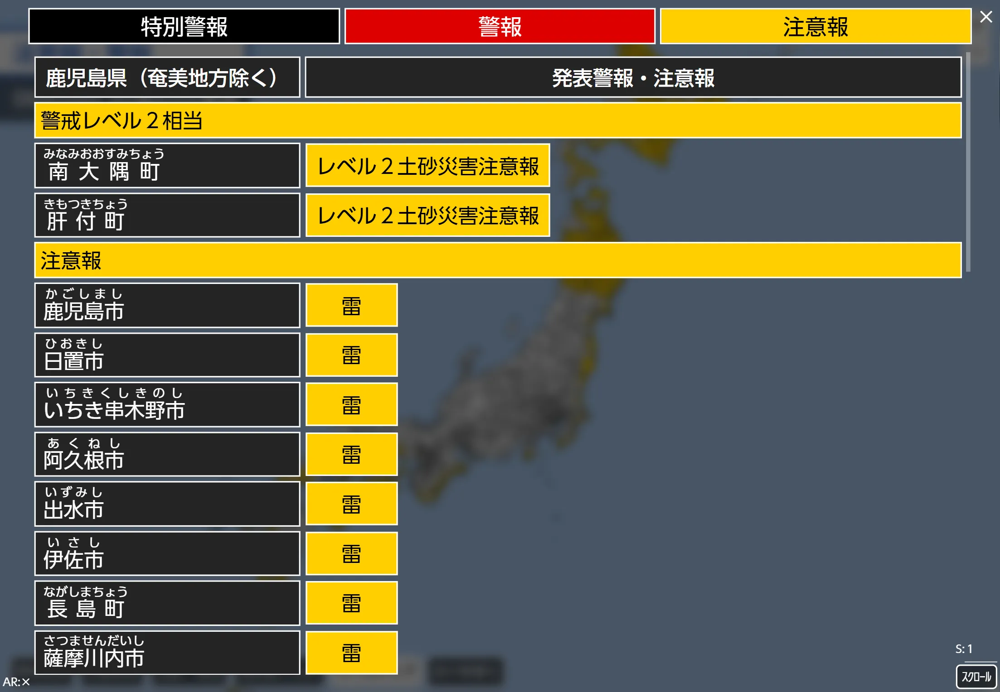

アプリ使用再開のお知らせ
アプリ使用再開のお知らせ本日2026年６月５日、 警報注意報Viewer の使用を再開いたしますのでお知らせいたします。
0026_アプリ使用中止のお知らせとお詫び においてお知らせいたしました、新たな防災気象情報への変更における、アプリの使用中止の件について、アプリの改修が終了し、アプリの供用を再開できると判断したことから、警報注意報Viewerの使用を再開しました。
「レベル２大雨注意報」「レベル３大雨警報」「レベル４大雨危険警報」「レベル５大雨特別警報」などのレベル段階別の警報・注意報等に対応し、詳細表でもレベル段階別の警報・注意報等とレベル段階別ではない警報・注意報等を分離して表示しています。
